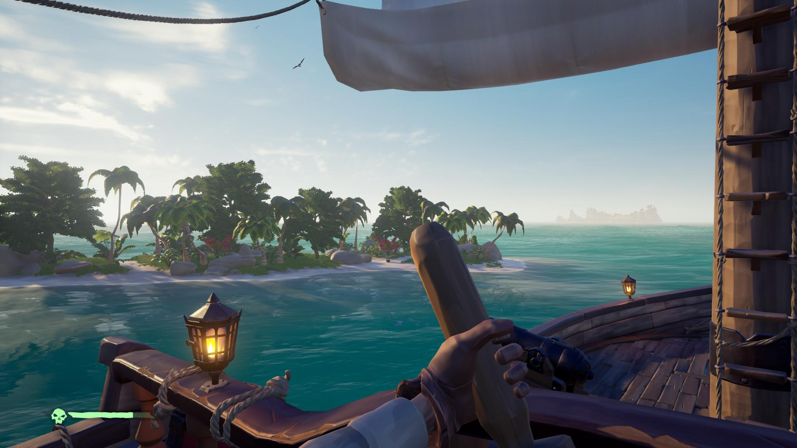
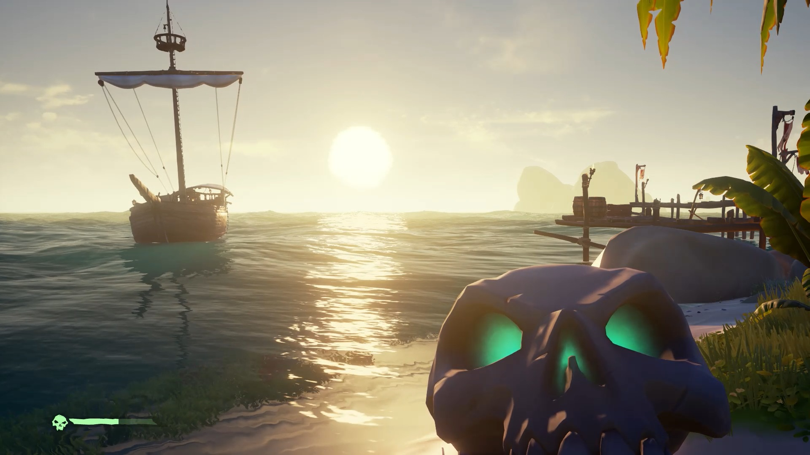
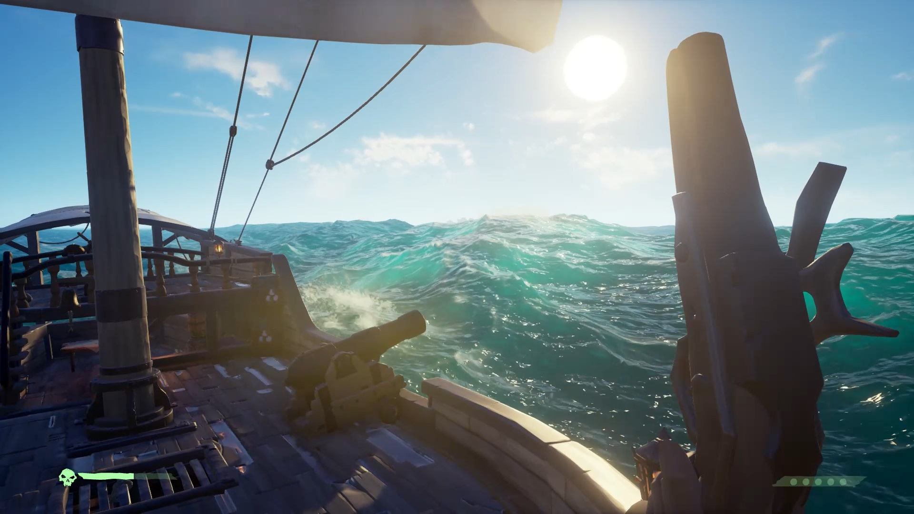
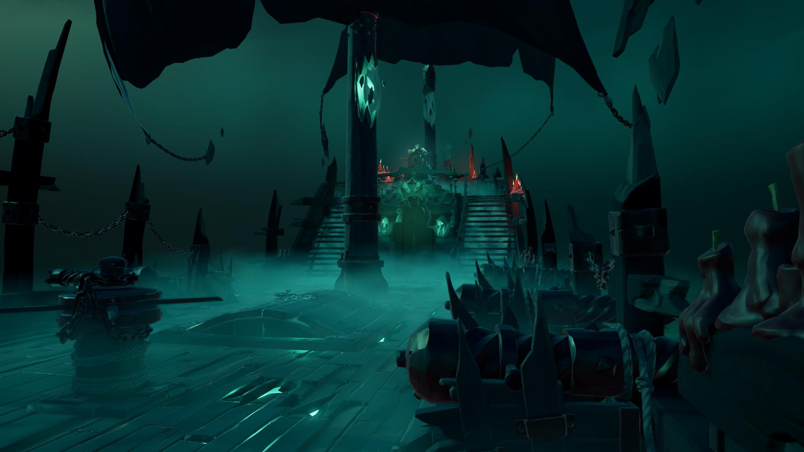

Sea of Thieves released this week to an assortment of reactions. It’s also an interesting test case for Microsoft’s Netflix-lite Game Pass programme. Here are my thoughts…
It’s been a while since we’ve seen Rare produce a full fat experience. Being tied to the Kinect in the immediate past we have to go all the way back to 2008’s Banjo-Kazooie: Nuts & Bolts on the Xbox 360. Since that time a lot of the original Rare staff moved on, some went to Playtonic Games and worked on Yooka-Laylee.

Sea of Thieves started production in 2014 and was announced in 2015 with the first gameplay being shown at E3 2016. Fast forward to today and its release has been met with what could charitably be called mixed reviews.
The main criticism levied at it is the sheer lack of content. The core of the game resolves around performing quests (called Voyages here) for three factions. The Gold Hoarders give you treasure hunts that involve ‘X Marks the Spot’ style maps or riddles to solve; The Order of Souls task you with hunting reanimated skeleton pirates and the Merchant Alliance sends you off to find certain items and deliver them.
The problem is these quests never develop into anything more complex and become retitive really quickly, especially if playing the game solo. Playing in a group obviously offsets this just due to most things in-game benefitting from player interaction. Solving riddles, finding chests, hunting pigs and larking about on your boat is just more fun with others; even the addition of a single person tranforms how it feels to play.

Playing solo isn’t necessarily a bad experience, I find SoT an exceptionally relaxing and chill game to play. The repetitive nature of the quests proving to be nothing more than a nudge to sail about and relax watching the sea as you slowly increase your reputation with the three factions.
These criticisms are fair, but the lack of quest diversity and complexity is just one facet of its problems. The game has been in development for over 3 years yet there is only one enemy type, skeletons (assuming you don’t count the Kraken). Now admittedly there are four types of skeleton (essentially the equivalent of old-school palette swaps) but fighting the same enemy over and over gets old quick. Combat also feels undercooked and unrefined consisting of slashing and blocking or basic gunplay.
A lot of these elements were seen in the E3 2015 reveal and don’t appear to have changed much in the meantime. Each element of the game, from quests to enemy variety to combat just feels extremely barebones. The one aspect the game truly nails however is atmosphere and visuals.

It’s indicative of how good the feeling of sailing the sea combined with absolutely breathtaking water and cloud rendering that it manages to cover over the game’s structural issues significantly. It’s just a lot of fun to play whilst you are playing it.
The skeleton (HA!) of the game is solid and if Rare expand on it meaningfully through updates then it could become a great thing. It just should’ve been more than it is already and the first impressions sadly might damage it in the long run.
The decision to sell it at full retail £50/$60 also boggles the mind as based on what is in there right now it’s hard to justify. It being the first first-party title to debut on Microsoft’s Game Pass will be interesting to analyse later down the line but that route is definitely a better way to see if it’s for you. Plopping down £7.99/$9.99 or even using the 14-day free trial to experience it is a lot easier to recommend.

Sea of Thieves even with its AAA budget and stunning visuals doesn’t really feel like it earns the right to sell for full retail price, it’d be much easier to swallow as a budget title. Especially with titles like Blackwake on the horizon and Ubisoft’s Skull & Bones attempting to enter the piracy market this year.